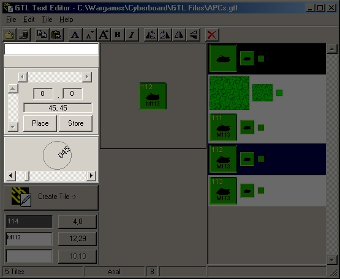
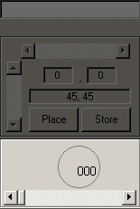

Rotating text using the horizontal scrollbar and rotation display

IMPORTANT NOTE:
The current text font setting (Font Name, Font Size, Font Color, etc...) can be changed after the "Place" button has been used. Just make any required changes and make a position change using the horizontal or vertical scrollbars. Any new font settings will then be displayed on the working tile AFTER the position has been updated.
After the current text has been positioned you may save that text and position data to one of the nine stored position data buttons - See Text Position Data Buttons.